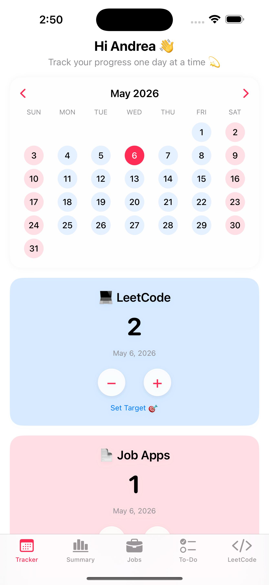
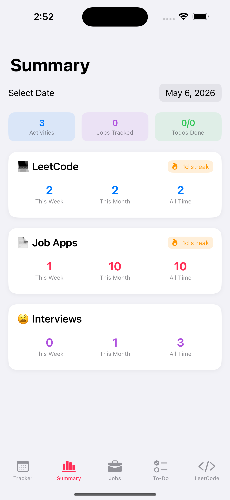
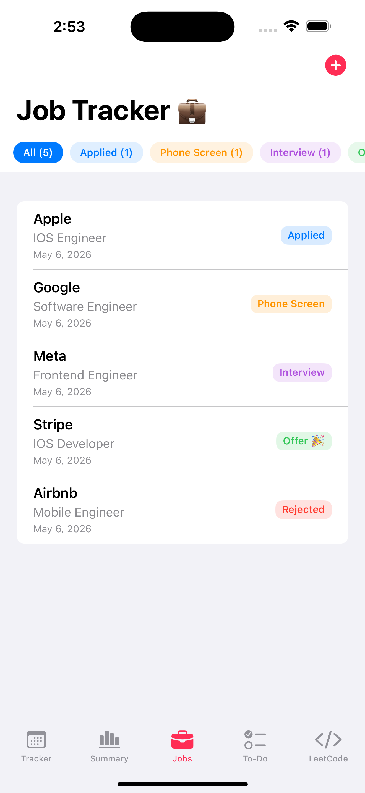
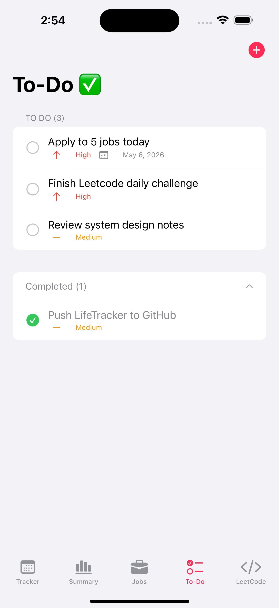
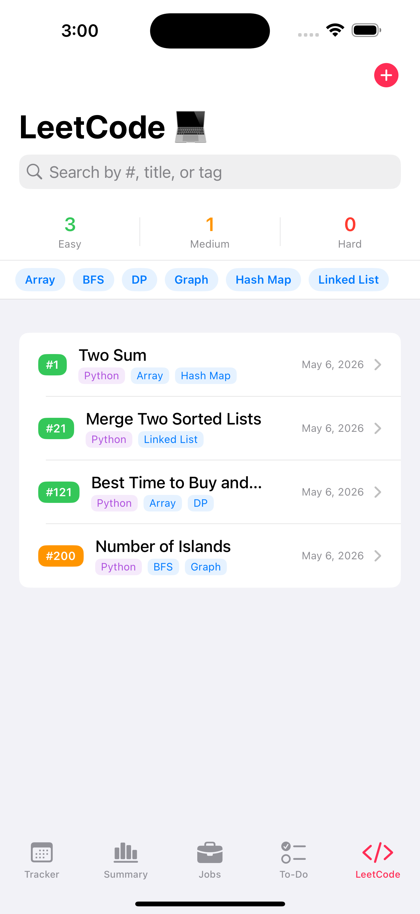

LifeTracker
A personal iOS productivity app that brings habits, job applications, to-dos, and LeetCode progress into one place — built because the tools I was using didn't fit the workflow I wanted.
Too many trackers.
Not enough tracking.
My productivity information was spread across different workflows. Habits lived in one place, tasks in another, while job applications and coding practice required their own tracking systems.
LifeTracker
one personal dashboard
Habits
Keep everyday routines and recurring personal goals visible in one place.
Job Applications
Keep application progress alongside the rest of my daily productivity workflow.
To-Dos
Organize the tasks I need to complete without needing another separate productivity tool.
LeetCode
Track coding-practice progress as part of the same system I use for career planning.
Keeping the UI
separate from the data.
LifeTracker uses an MVVM-style structure to separate SwiftUI views from application state and data logic, making each tracker easier to organize and maintain as the app grows.
SwiftUI
Displays tracker data and handles user interactions.
Application Logic
Manages state changes and connects the interface to persistent application data.
Local Data
Tracker information persists locally so progress remains available between app sessions.
Separate
UI code stays focused on presentation instead of containing every piece of application logic.
Observe
SwiftUI can react to state changes and update the interface when tracked information changes.
Persist
Local persistence keeps personal tracking data available when the app is closed and reopened.
Built around the things
I actually track.
Instead of building a generic productivity app, I designed each part of LifeTracker around a workflow I regularly use — from daily habits to job searching and technical interview practice.
Daily habits that feel rewarding.
Activities can be customized with their own emoji and color, logged from a calendar, and tracked against daily goals.
A tiny personal ATS.
Applications store the information I need while job searching, including company, role, status, application date, job link, and the original job description.
Tasks ordered by what matters.
Tasks support priority levels and optional due dates, with automatic ordering to keep urgent work visible.
More than a solved counter.
Each problem can store its metadata and complete solution, turning coding practice into a searchable personal reference.
One app.
My whole workflow.
Each part of LifeTracker is designed around a different piece of my daily workflow while keeping the experience visually consistent across the app.

Start with today.
Daily activities stay front and center, making it easy to log progress and see how the day is going.

See the bigger picture.

Applications, organized.

Know what's next.

Track the grind.
Close the app.
Your progress stays.
LifeTracker stores its data locally using Codable models and UserDefaults. This keeps the app lightweight and fully offline while preserving tracker data between sessions.
App Data
JobApplication
TodoItem
LeetCodeProblem
Serialized Data
UserDefaults
on-device persistenceOffline First
The core tracking experience does not depend on a remote server or network connection.
Simple Storage
Codable models provide a straightforward way to serialize the structured data used throughout the app.
Persistent State
Saved information can be restored when LifeTracker launches, allowing progress to continue across sessions.
Building for myself
changed how I design.
LifeTracker started from a real problem in my own workflow. Building something I would personally use pushed me to think beyond implementation and consider organization, usability, persistence, and how features fit together as a product.
Design Around the User
Starting from my own workflow helped me decide which features were actually useful instead of adding functionality simply because it was possible.
Structure Matters
Separating SwiftUI views from application state made the app easier to reason about as more trackers and interactions were added.
Persistence Is Part of UX
A productivity app only feels useful when its state survives between sessions, making local persistence an important part of the overall experience.
The best feature isn't always another feature.
Building LifeTracker taught me to think about software as a complete product: what problem it solves, how information should be organized, how state should be managed, and whether the final experience is something I would actually want to use.
Explore LifeTracker.
View the SwiftUI implementation, models, views, and application structure on GitHub.